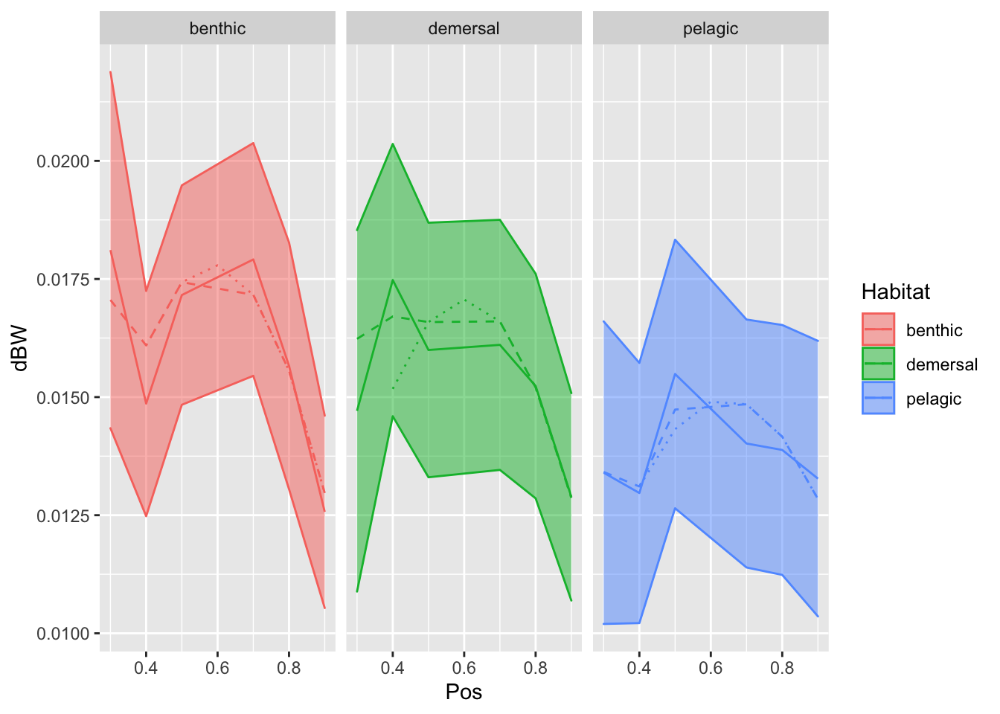

Last updated: 2022-04-11
Checks: 7 0
Knit directory: Code/
This reproducible R Markdown analysis was created with workflowr (version 1.7.0). The Checks tab describes the reproducibility checks that were applied when the results were created. The Past versions tab lists the development history.
Great! Since the R Markdown file has been committed to the Git repository, you know the exact version of the code that produced these results.
Great job! The global environment was empty. Objects defined in the global environment can affect the analysis in your R Markdown file in unknown ways. For reproduciblity it’s best to always run the code in an empty environment.
The command set.seed(20211230) was run prior to running the code in the R Markdown file. Setting a seed ensures that any results that rely on randomness, e.g. subsampling or permutations, are reproducible.
Great job! Recording the operating system, R version, and package versions is critical for reproducibility.
Nice! There were no cached chunks for this analysis, so you can be confident that you successfully produced the results during this run.
Great job! Using relative paths to the files within your workflowr project makes it easier to run your code on other machines.
Great! You are using Git for version control. Tracking code development and connecting the code version to the results is critical for reproducibility.
The results in this page were generated with repository version e47dde2. See the Past versions tab to see a history of the changes made to the R Markdown and HTML files.
Note that you need to be careful to ensure that all relevant files for the analysis have been committed to Git prior to generating the results (you can use wflow_publish or wflow_git_commit). workflowr only checks the R Markdown file, but you know if there are other scripts or data files that it depends on. Below is the status of the Git repository when the results were generated:
Ignored files:
Ignored: .DS_Store
Ignored: .Rhistory
Ignored: .Rproj.user/
Ignored: Flexibility Comparisons.nb.html
Ignored: Main.nb.html
Ignored: PGLS.FullData.nb.html
Ignored: PGLSforeachMeasFeature.nb.html
Ignored: PGLSwithPCA_Dims.nb.html
Ignored: PreppedVertMeas.nb.html
Ignored: ProcessCymatogasterFiles.nb.html
Ignored: ProcessFCSVfiles.nb.html
Ignored: TestingHabitatwithFriedmanData.nb.html
Ignored: Trilok_tree.nb.html
Ignored: VertLM.nb.html
Ignored: VertMeasLDA_Attempt.nb.html
Ignored: VertPGLS.nb.html
Ignored: VertPairs.nb.html
Ignored: analysis/.DS_Store
Ignored: analysis/10-VertLM.nb.html
Ignored: analysis/20-plot_phylogeny.nb.html
Ignored: analysis/21-plot_fits_and_summary.nb.html
Ignored: analysis/CheckSpeciesMatch.nb.html
Ignored: caper_test.nb.html
Ignored: data/.DS_Store
Ignored: ggtree_attempt.nb.html
Ignored: plot_example_data.nb.html
Ignored: plot_fits_and_summary.nb.html
Ignored: plot_phylogeny.nb.html
Ignored: renv/library/
Ignored: renv/staging/
Ignored: summarize_vert_meas.nb.html
Ignored: test_phylogeny.nb.html
Ignored: test_vertebraspace.nb.html
Ignored: vert_evol.Rproj
Untracked files:
Untracked: Main.html
Untracked: ProcessFCSVfiles.Rmd
Untracked: VertPGLS.html
Untracked: gg_saver.R
Untracked: output/BodyDistribution.pdf
Untracked: output/MasterVert_Measurements.csv
Untracked: output/mean_d_alphaPos_CBL.pdf
Untracked: output/pair_plot.pdf
Untracked: output/plot_example_data_figure.pdf
Untracked: output/stats_table.rtf
Untracked: plot_fits_and_summary.Rmd
Untracked: summarize_vert_meas.html
Untracked: testtree.csv
Untracked: vert_tree.csv
Note that any generated files, e.g. HTML, png, CSS, etc., are not included in this status report because it is ok for generated content to have uncommitted changes.
These are the previous versions of the repository in which changes were made to the R Markdown (analysis/10-VertLM.Rmd) and HTML (docs/10-VertLM.html) files. If you’ve configured a remote Git repository (see ?wflow_git_remote), click on the hyperlinks in the table below to view the files as they were in that past version.
| File | Version | Author | Date | Message |
|---|---|---|---|---|
| Rmd | 23908bd | Eric Tytell | 2021-12-30 | Test site build again |
| Rmd | edeae3c | Eric Tytell | 2021-12-30 | Rename notebooks to indicate order |
library(tidyverse)── Attaching packages ─────────────────────────────────────── tidyverse 1.3.1 ──✓ ggplot2 3.3.5 ✓ purrr 0.3.4
✓ tibble 3.1.4 ✓ dplyr 1.0.7
✓ tidyr 1.1.3 ✓ stringr 1.4.0
✓ readr 2.0.1 ✓ forcats 0.5.1── Conflicts ────────────────────────────────────────── tidyverse_conflicts() ──
x dplyr::filter() masks stats::filter()
x dplyr::lag() masks stats::lag()library(emmeans)
library(ggbeeswarm)
library(patchwork)
library(here)here() starts at /Users/etytel01/Documents/Vertebrae/Codevertdata <- read_csv(here("output/vertdata_centered.csv"))Rows: 571 Columns: 71── Column specification ────────────────────────────────────────────────────────
Delimiter: ","
chr (17): Species, MatchGenus, MatchSpecies, Family, BodyShape, Habitat_Init...
dbl (54): Indiv, Pos, SL, CBL_old_raw, alpha_Pos_raw, d_raw, D_Pos_raw, alph...
ℹ Use `spec()` to retrieve the full column specification for this data.
ℹ Specify the column types or set `show_col_types = FALSE` to quiet this message.head(vertdata)# A tibble: 6 × 71
Species MatchGenus MatchSpecies Family Indiv Pos SL CBL_old_raw
<chr> <chr> <chr> <chr> <dbl> <dbl> <dbl> <dbl>
1 Alectis_ciliaris Alectis ciliaris <NA> 1 0.4 799 24.9
2 Alectis_ciliaris Alectis ciliaris <NA> 1 0.5 799 34.4
3 Alectis_ciliaris Alectis ciliaris <NA> 1 0.6 799 35.8
4 Alectis_ciliaris Alectis ciliaris <NA> 1 0.7 799 36.6
5 Alectis_ciliaris Alectis ciliaris <NA> 1 0.8 799 35.2
6 Alectis_ciliaris Alectis ciliaris <NA> 1 0.9 799 32.8
# … with 63 more variables: alpha_Pos_raw <dbl>, d_raw <dbl>, D_Pos_raw <dbl>,
# alpha_Ant_raw <dbl>, D_Ant_raw <dbl>, CBL_old <dbl>, alphaPos <dbl>,
# d <dbl>, DPos <dbl>, alphaAnt <dbl>, DAnt <dbl>, Pt1x <dbl>, Pt1y <dbl>,
# Pt2x <dbl>, Pt2y <dbl>, Pt3x <dbl>, Pt3y <dbl>, Pt4x <dbl>, Pt4y <dbl>,
# Pt5x <dbl>, Pt5y <dbl>, Pt6x <dbl>, Pt6y <dbl>, Pt7x <dbl>, Pt7y <dbl>,
# BodyShape <chr>, Habitat_Initial <chr>, Habitat_Friedman <chr>,
# Habitat_FishBase <chr>, Habitat <chr>, Water_Type <chr>, Max_BW_mm <dbl>, …Function to get the coefficients from an lm type model and rename them appropriately.
get_coefs <- function(model) {
c <- data.frame(coef(model)) %>%
rownames_to_column("term") %>%
mutate(term = case_when(term == "(Intercept)" ~ "int",
term == "Pos" ~ "slope",
term == "I(Pos^2)" ~ "quad")) %>%
rename(coef = coef.model.) %>%
pivot_wider(names_from = term, values_from = coef)
if (model$rank > 1) {
emm <- as.data.frame(emmeans(model, specs = ~Pos, at = list(Pos = 0.8)))
} else {
emm <- as.data.frame(emmeans(model, specs = ~1))
}
c$`80` = emm$emmean
c
}First, pivot the data frame so that each of the variables are stacked in one column, so that we can fit the pattern for each variable in one go.
vertdata_lm <-
vertdata %>%
select(Species, Indiv, Pos,
d, CBL, alphaPos, alphaAnt, DPos, DAnt,
dBW, DAntBW, DPosBW, d_normCBL, d_normD, Iratio) %>%
mutate(Pos = as.numeric(as.character(Pos))) %>%
pivot_longer(c(d, CBL, alphaPos, alphaAnt, DPos, DAnt, dBW, DAntBW, DPosBW, d_normCBL, d_normD, Iratio),
names_to = "var", values_to = "value")Next, for each species and variable, fit models with just an intercept, a slope, or a quadratic term.
vertdata_lm <-
vertdata_lm %>%
group_by(Species, var) %>%
nest() %>%
mutate(model0 = purrr::map(data, ~lm(value ~ 1, data = .x)),
model1 = purrr::map(data, ~lm(value ~ Pos, data = .x)),
model2 = purrr::map(data, ~lm(value ~ Pos + I(Pos^2), data = .x)))Now pivot the frame even longer so that the models are stacked and are identified by order. Then run through all the models and extract the AIC.
vertdata_lm <-
vertdata_lm %>%
select(-data) %>%
pivot_longer(contains("model"), names_to = "order", values_to = "model") %>%
mutate(order = str_extract(order, '[0-9]')) %>%
group_by(Species, var) %>%
mutate(fit = purrr::map(model, broom::glance)) %>%
unnest(fit) %>%
select(Species:model, AIC)
head(vertdata_lm)# A tibble: 6 × 5
# Groups: Species, var [2]
Species var order model AIC
<chr> <chr> <chr> <list> <dbl>
1 Alectis_ciliaris d 0 <lm> -56.5
2 Alectis_ciliaris d 1 <lm> -69.0
3 Alectis_ciliaris d 2 <lm> -71.0
4 Alectis_ciliaris CBL 0 <lm> -43.3
5 Alectis_ciliaris CBL 1 <lm> -43.7
6 Alectis_ciliaris CBL 2 <lm> -49.6Then, group by each species and variable, extract the model with the lowest AIC, and pull out the coefficients of that model. This may give us just a midpoint, a midpoint and a slope, or a midpoint, slope, and quadratic term. By “midpoint”, I mean the estimated marginal value at 80% of the length of the body, which we use instead of an intercept or an overall mean. The intercept can be hard to interpret, particularly for the quadratic models, and the overall mean is sometimes a bit weird if we have more points for some fish than others.
vertdata_lm <-
vertdata_lm %>%
group_by(Species, var) %>%
filter(order == 2) %>% # AIC == min(AIC)) %>%
mutate(coefs = purrr::map(model, get_coefs)) %>%
unnest(coefs)models <-
distinct(vertdata_lm, Species, var, .keep_all = TRUE)saveRDS(models, here('output/vertdata_summary_lm_models.Rds'))Now pivot the frame back wider so that each variable with its mean, slope, and quadratic term, are stored in columns.
vertdata_lm <-
models %>%
select(Species, var, order, `80`, slope, quad) %>%
pivot_wider(names_from = "var", names_glue = "{var}_{.value}",
values_from = c(`80`, slope, quad, order))head(vertdata_lm)# A tibble: 6 × 49
# Groups: Species [6]
Species d_80 CBL_80 alphaPos_80 alphaAnt_80 DPos_80 DAnt_80 dBW_80
<chr> <dbl> <dbl> <dbl> <dbl> <dbl> <dbl> <dbl>
1 Alectis_cilia… 7.81e-4 0.0359 74.7 73.9 0.0273 0.0275 0.00697
2 Amia_calva 6.38e-3 0.00754 131. 133. 0.0158 0.0165 0.0430
3 Anoplogaster_… 8.07e-4 0.0272 61.3 68.6 0.0172 0.0182 0.00412
4 Aphareus_furca 9.94e-4 0.0324 62.5 65.4 0.0216 0.0219 0.00501
5 Catostomus_ca… 2.57e-3 0.0168 88.8 87.4 0.0162 0.0165 0.0145
6 Cephalopholis… 2.54e-3 0.0322 56.8 60.4 0.0172 0.0194 0.0164
# … with 41 more variables: DAntBW_80 <dbl>, DPosBW_80 <dbl>,
# d_normCBL_80 <dbl>, d_normD_80 <dbl>, Iratio_80 <dbl>, d_slope <dbl>,
# CBL_slope <dbl>, alphaPos_slope <dbl>, alphaAnt_slope <dbl>,
# DPos_slope <dbl>, DAnt_slope <dbl>, dBW_slope <dbl>, DAntBW_slope <dbl>,
# DPosBW_slope <dbl>, d_normCBL_slope <dbl>, d_normD_slope <dbl>,
# Iratio_slope <dbl>, d_quad <dbl>, CBL_quad <dbl>, alphaPos_quad <dbl>,
# alphaAnt_quad <dbl>, DPos_quad <dbl>, DAnt_quad <dbl>, dBW_quad <dbl>, …vertdata_summary <- read_csv(here("output/vertdata_summary.csv"))Rows: 83 Columns: 43── Column specification ────────────────────────────────────────────────────────
Delimiter: ","
chr (5): Species, Habitat, Water_Type, MatchSpecies, MatchGenus
dbl (38): Indiv, fineness, CBL_med, CBL_max, CBL_mn, d_med, d_max, d_mn, alp...
ℹ Use `spec()` to retrieve the full column specification for this data.
ℹ Specify the column types or set `show_col_types = FALSE` to quiet this message.For any species with multiple individuals, just take the first one.
vertdata_summary <-
vertdata_summary %>%
filter(Indiv == 1) %>%
select(-Indiv)And finally, join this data frame with the earlier one that has the maxima and medians.
vertdata_summary_lm <-
left_join(vertdata_summary, vertdata_lm, by=c("Species"))write_csv(vertdata_summary_lm, here("output/vertdata_summary_lm.csv"))get_model_vals <- function(model, df) {
val <- predict(model, newdata=df)
df$value <- val
df
}posvals <- tibble(Pos = seq(0.3, 0.9, by=0.1))
modelfits <-
models %>%
select(Species, var, model) %>%
filter(var %in% c('dBW', 'CBL', 'alphaAnt', 'alphaPos', 'DAntBW', 'DPosBW')) %>%
mutate(pred = purrr::map(model, ~ get_model_vals(.x, posvals))) %>%
unnest(pred) %>%
select(-model) %>%
pivot_wider(id_cols = c(Species, Pos), names_from = var, values_from = value) %>%
rename_with(~ str_c(.x, '_fit'), .cols = c(dBW, CBL, alphaAnt, alphaPos, DAntBW, DPosBW)) # %>%
# left_join(vertdata_summary, by = c("Species"))modelfits <-
vertdata %>%
filter(Indiv == 1) %>%
select(Species, Pos, Habitat, dBW, CBL, alphaAnt, alphaPos, DAntBW, DPosBW) %>%
inner_join(modelfits, by = c("Species", "Pos"))poshabitat = expand_grid(Pos = seq(0.4, 0.9, by=0.1), Habitat = c("benthic", "demersal", "pelagic"))
meanparams <-
vertdata_summary_lm %>%
group_by(Habitat) %>%
dplyr::summarize(across(c(dBW_80, dBW_slope, dBW_quad), mean)) %>%
mutate(dBW_int = dBW_80 - 0.8^2 * dBW_quad - 0.8 * dBW_slope) %>%
right_join(poshabitat) %>%
mutate(dBW = dBW_quad * Pos^2 + dBW_slope * Pos + dBW_int)Joining, by = "Habitat"modelfits %>%
# filter(str_starts(Species, "Alectis") | str_starts(Species, "Sphyraena") |
# str_starts(Species, 'Cymatogaster') | str_starts(Species, 'Amia') |
# str_starts(Species, 'Opsanus')) %>%
ggplot(aes(x = Pos, y = dBW, color = Habitat, fill = Habitat)) +
stat_summary(fun.data = "mean_se", geom="ribbon", alpha=0.5) +
stat_summary(fun = "mean", geom="line") +
stat_summary(aes(y = dBW_fit), fun = mean, geom="line", linetype="dashed") +
geom_line(data = meanparams, aes(x = Pos, y = dBW, color=Habitat), linetype="dotted") +
# geom_point() +
#geom_path(aes(y = dBW_fit, group=Species)) +
facet_grid(. ~ Habitat)
sessionInfo()R version 4.1.2 (2021-11-01)
Platform: x86_64-apple-darwin17.0 (64-bit)
Running under: macOS Big Sur 10.16
Matrix products: default
BLAS: /Library/Frameworks/R.framework/Versions/4.1/Resources/lib/libRblas.0.dylib
LAPACK: /Library/Frameworks/R.framework/Versions/4.1/Resources/lib/libRlapack.dylib
locale:
[1] en_US.UTF-8/en_US.UTF-8/en_US.UTF-8/C/en_US.UTF-8/en_US.UTF-8
attached base packages:
[1] stats graphics grDevices datasets utils methods base
other attached packages:
[1] here_1.0.1 patchwork_1.1.1 ggbeeswarm_0.6.0 emmeans_1.6.3
[5] forcats_0.5.1 stringr_1.4.0 dplyr_1.0.7 purrr_0.3.4
[9] readr_2.0.1 tidyr_1.1.3 tibble_3.1.4 ggplot2_3.3.5
[13] tidyverse_1.3.1
loaded via a namespace (and not attached):
[1] httr_1.4.2 bit64_4.0.5 vroom_1.5.4 jsonlite_1.7.2
[5] modelr_0.1.8 assertthat_0.2.1 highr_0.9 renv_0.14.0
[9] vipor_0.4.5 cellranger_1.1.0 yaml_2.2.1 pillar_1.6.2
[13] backports_1.2.1 lattice_0.20-45 glue_1.4.2 digest_0.6.27
[17] promises_1.2.0.1 rvest_1.0.1 colorspace_2.0-2 plyr_1.8.6
[21] htmltools_0.5.2 httpuv_1.6.4 pkgconfig_2.0.3 broom_0.7.9
[25] haven_2.4.3 xtable_1.8-4 mvtnorm_1.1-2 scales_1.1.1
[29] whisker_0.4 later_1.3.0 tzdb_0.1.2 git2r_0.29.0
[33] farver_2.1.0 generics_0.1.0 ellipsis_0.3.2 withr_2.4.2
[37] cli_3.0.1 magrittr_2.0.1 crayon_1.4.1 readxl_1.3.1
[41] estimability_1.3 evaluate_0.14 fs_1.5.0 fansi_0.5.0
[45] xml2_1.3.2 beeswarm_0.4.0 tools_4.1.2 hms_1.1.0
[49] lifecycle_1.0.0 munsell_0.5.0 reprex_2.0.1 compiler_4.1.2
[53] rlang_0.4.11 grid_4.1.2 rstudioapi_0.13 labeling_0.4.2
[57] rmarkdown_2.10 gtable_0.3.0 DBI_1.1.1 R6_2.5.1
[61] lubridate_1.7.10 knitr_1.34 bit_4.0.4 fastmap_1.1.0
[65] utf8_1.2.2 workflowr_1.7.0 rprojroot_2.0.2 stringi_1.7.4
[69] parallel_4.1.2 Rcpp_1.0.7 vctrs_0.3.8 dbplyr_2.1.1
[73] tidyselect_1.1.1 xfun_0.25 coda_0.19-4